인증과 인가는 다른 얘기예요
바이브 코딩으로 만든 앱이 왜 쉽게 뚫리는지, 영상은 맥도날드 채용 사이트 사례로 시작해요. 관리자 비밀번호가 123456이었고, 지원자 이름·이메일·전화번호와 면접 대화 내용까지 6,400만 건이 노출됐다고 해요.
이번 편은 보안 체크리스트 16개 중 뒤쪽 여덟 개를 다뤄요. 아래 화면의 09~16번이 이 문서의 목차예요. 앞의 1부(API 키·환경변수)와 2부(데이터베이스 접근 권한)는 채널의 이전 영상에 있어요.
건물로 비유한 인증과 인가
두 말은 자주 같이 나오지만 뜻이 달라요. 영상은 회사 건물에 들어가는 과정에 빗대요. 1층 경비실에서 신분증을 보여 주고 건물에 들어가는 게 인증이에요. 들어간 다음 "사원은 5층까지, 6층부터는 임원만"처럼 갈 수 있는 층을 정해 주는 게 인가예요.
영상은 외우는 법도 알려 줘요. 인증의 '증'은 신분증, 인가는 "너 몇 층까지 가?"예요. 아래 슬라이드처럼 문을 열어 주는 것과 층을 제한하는 건 완전히 다른 얘기예요.
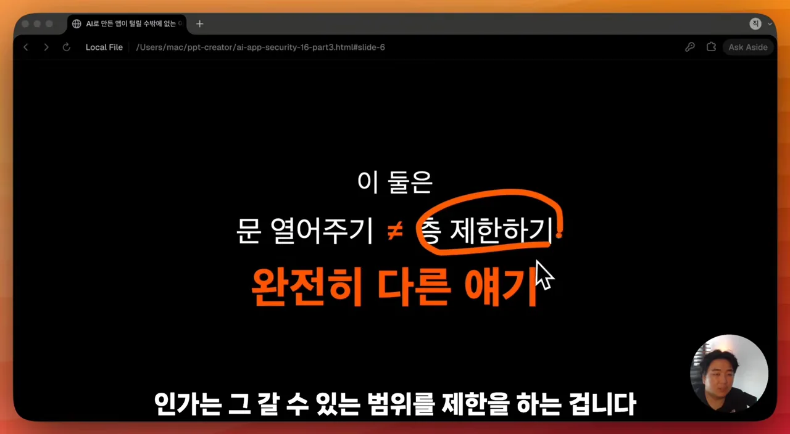
로그인만 됐다고 남의 데이터가 보이면 안 돼요
AI에게 "로그인 기능 만들어 줘"라고 하면 회원가입·로그인 화면이 금방 나와요. 영상은 이게 껍데기인 경우가 많다고 해요. 로그인은 되는데, 로그인한 사람이 무엇을 볼 수 있는지는 아무도 정하지 않은 상태예요. 그러면 사원이 임원실·회장실에 다 들어가는 일이 생겨요.
9번 · 서버에서 권한까지 검사하기
로그인이 된다고 안전한 게 아니에요. 확인하는 방법은 단순해요. 권한 없는 일반 계정을 하나 만들고, 그 계정으로 관리자 화면 같은 여러 주소에 들어가 봐요. 권한 없는 주소가 하나도 열리지 않아야 해요.
10번 · 내 것만 열리게 소유자 검사하기
쇼핑몰 주문 내역 주소를 보면 끝에 숫자가 붙어 있어요. 아래 슬라이드의 주황색 1024가 주문 번호예요. 주소는 누구나 고칠 수 있으니 1025로 바꿔서 엔터를 칠 수 있어요. 그게 남의 주문이라면 보이면 안 돼요.
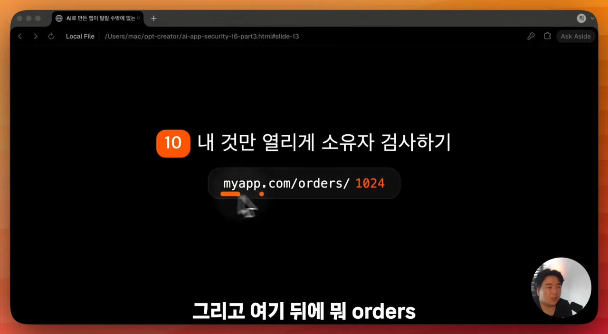
영상은 직접 해 봐요. 쿠팡에서 공유기를 산 주문 상세 주소의 마지막 숫자 6을 7로 바꿨어요. 화면 가운데에 "주문 정보가 존재하지 않습니다"가 뜨고, 다시 6으로 돌리면 정상으로 보여요. 쿠팡은 인가가 잘 된 경우예요.
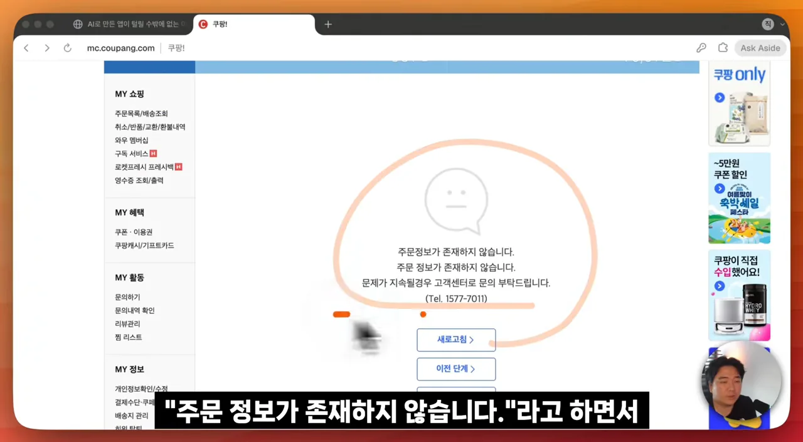
인가가 안 된 서버에서 남의 주문이 보이는 이유는 하나예요. 서버가 아래 슬라이드의 질문, "이 데이터의 주인이 지금 로그인한 사람인가?"를 묻지 않았기 때문이에요. 이 질문은 한 번이 아니라 매 요청마다 해야 해요.
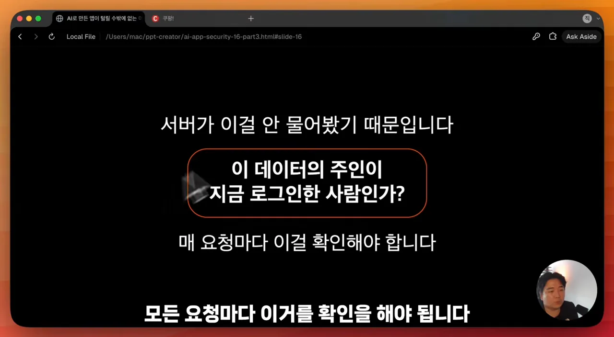
요청 하나가 서버에서 어떻게 걸러지는지 그려 보면 이래요. 로그인 확인과 주인 확인이 따로 있다는 게 요점이에요.
sequenceDiagram participant U as 로그인한 사용자 A participant S as 서버 participant D as DB U->>S: GET /orders/1025 S->>S: 로그인했나? (인증) → 예 S->>D: 1025번 주문 조회 D-->>S: 주인 = 사용자 B S->>S: 주인 = 지금 로그인한 사람? (인가) → 아니요 S-->>U: 거절 (주문 정보가 존재하지 않음)
점검은 AI에게 맡길 수도 있어요. 영상이 보여 준 요청문은 아래와 같아요. "지금 로그인한 사용자와 같은지"에 밑줄이 그어져 있어요.
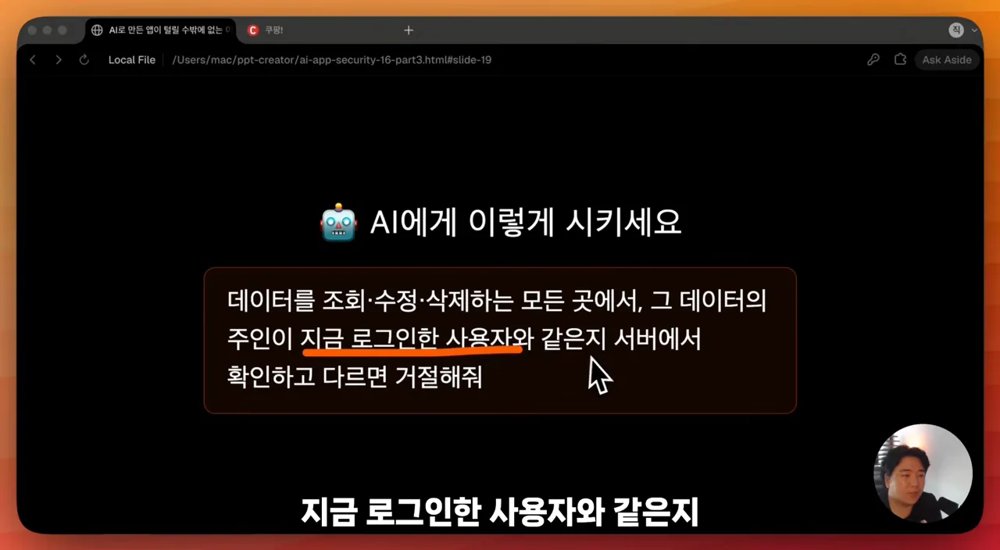
화면에서 숨기는 건 막는 게 아니에요
11번은 인가를 어디서 하느냐의 문제예요. 관리자로 로그인했을 때만 보이는 '관리자 모드' 버튼이 있다고 해 봐요. 아래 슬라이드는 일반 사용자 화면이에요. myapp.com/dashboard의 메뉴에 '내 정보', '주문'만 보이고, 회색 '관리자 (숨김)'은 감춰져 있어요.
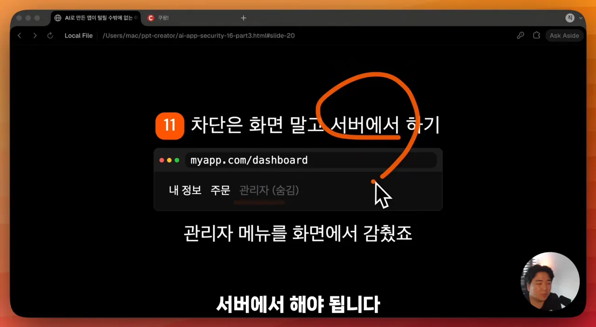
문제는 크롬 개발자 도구를 열면 화면이 어떤 주소로 요청하는지 다 보인다는 점이에요. 관리자 주소를 알아내서 그대로 호출하면, 서버가 확인하지 않는 한 일반 사용자도 그 기능을 쓸 수 있어요. 관리자 화면으로 가는 조건을 프론트엔드 코드에만 넣어 두면 주소도 코드에서 바로 드러나요.
아래 슬라이드가 두 방식을 나란히 놓아요. 왼쪽 '화면에서 감춤'은 메뉴만 안 보이고 주소는 그대로 열려 있어요. 오른쪽 '서버에서 차단'은 요청 자체를 거절하니 주소를 알아내도 소용없어요.
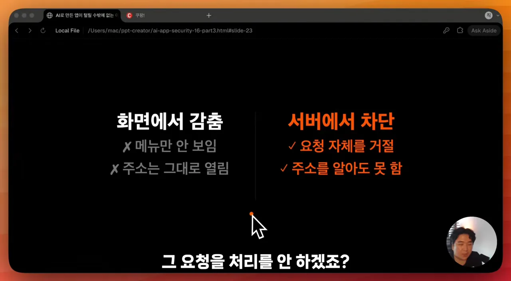
로그인 관리 다섯 가지
12번은 로그인과 관련해 챙길 다섯 가지를 한 세트로 묶었어요. 먼저 전체를 표로 보고, 화면이 있는 항목만 아래에서 다시 볼게요.
| # | 할 일 | 안 하면 생기는 일 |
|---|---|---|
| 1 | 로그인 시도 횟수 제한 | 프로그램이 비밀번호를 수십만 개 대입해 봐요 |
| 2 | 토큰에 만료 시간 넣기 | 출입증이 평생 유효해요. 탈퇴해도 로그인 상태가 남을 수 있어요 |
| 3 | 관리자 토큰을 브라우저에 저장하지 않기 | 모든 사용자가 관리자 기능을 쓸 수 있어요 |
| 4 | 기본 관리자 계정 바꾸기 | admin/admin, test1234는 누구나 떠올려요 |
| 5 | 관리자 계정에 2단계 인증 | 비밀번호 하나만 뚫리면 끝이에요 |
시도 횟수와 토큰 만료
시도 횟수를 막지 않으면 프로그램으로 비밀번호를 대량으로 넣어 볼 수 있어요. 아래 슬라이드는 이걸 "하루 수십만 번"이라고 적었어요. 여러 서비스에서 보는 "다섯 번 이상 틀리면 로그인 제한"이 이 장치예요.
토큰은 '이 사람은 로그인한 정상 회원'이라는 출입증이에요. 슬라이드 한가운데 문구처럼, 만료가 없으면 평생 유효해요. 갱신도 안 하면 탈퇴한 사람이 로그인 상태로 남는 이상한 일도 생겨요. 영상은 대표적인 형식인 JWT(JSON Web Token)를 언급만 하고 자세한 건 다음 콘텐츠로 미뤘어요.
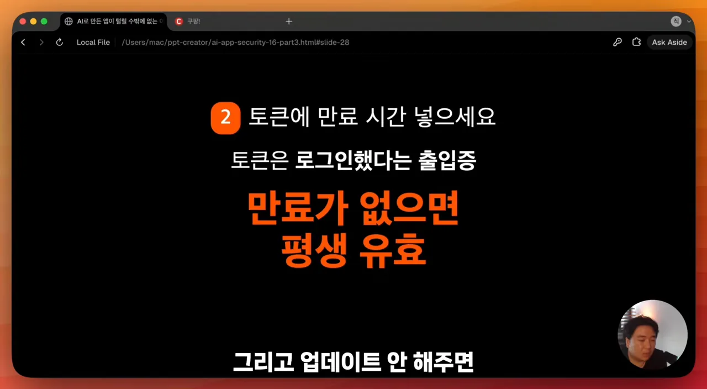
테스트용 코드와 기본 계정
3번은 테스트하다 남긴 코드 이야기예요. 아래 슬라이드의 localStorage.setItem("adminToken", token)처럼 관리자 토큰을 브라우저 로컬 스토리지에 넣는 코드를 심는 경우가 있어요. 이게 지워지지 않고 배포되면 서비스를 쓰는 모든 사람이 그 관리자 토큰으로 관리자 기능을 써요. 영상은 아예 이런 코드를 쓰지 말라고 권해요.
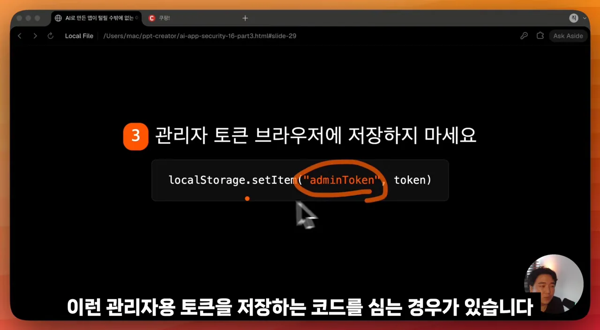
4번은 누구나 짐작할 수 있는 계정이에요. 슬라이드에 나온 admin / admin, test1234, admin1234 같은 문자열은 쓰면 안 돼요. 5번은 관리자 계정에 이메일이나 휴대폰 문자로 한 번 더 확인하는 2단계 인증을 거는 거예요.
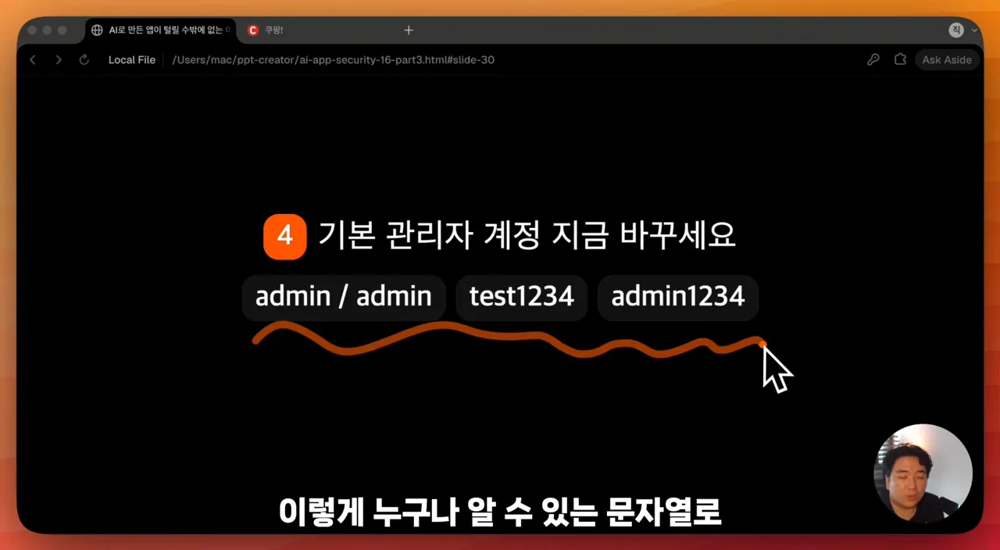
HTTPS와 비밀번호 해시
여기부터 4부, 암호화와 개인정보 이야기예요.
13번 · 주소창 자물쇠(HTTPS) 켜기
HTTP(HyperText Transfer Protocol)는 웹에서 통신하기 위한 규약이고, 뒤에 붙은 S는 Secure예요. HTTPS(HyperText Transfer Protocol Secure)가 아니면 로그인할 때 입력한 아이디·비밀번호가 서버로 가는 길에 암호화 없이 그대로 드러나요. 네이버에 들어가서 주소창에 자물쇠가 보이고 "이 연결은 안전합니다"가 뜨는지 보는 게 확인 방법이에요.
누가 켜 주느냐는 어디에 배포했느냐에 달려 있어요. 아래 슬라이드 왼쪽처럼 배포 플랫폼은 https와 자물쇠가 자동이에요. 오른쪽처럼 직접 서버를 돌리거나 IP(Internet Protocol)로 접속하게 하면 http 그대로라 사고가 나요. 영상은 Vercel 같은 플랫폼과, 맥미니로 직접 호스팅하는 경우를 예로 들어요.
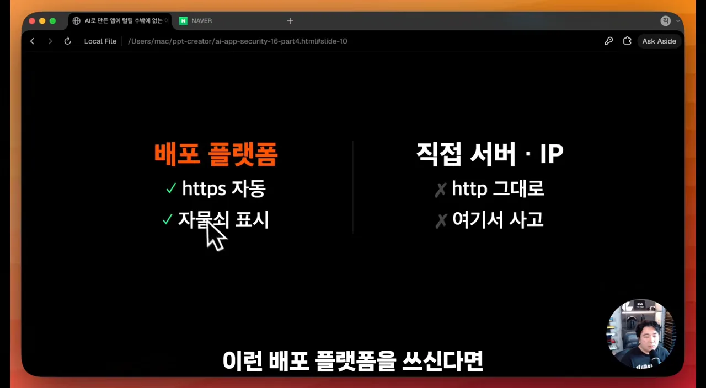
14번 · 비밀번호는 해시로 저장하기
해시는 어떤 텍스트를 고정된 길이의 다른 텍스트로 바꾸는 거예요. 비슷해 보이는 암호화와는 되돌릴 수 있느냐가 달라요. 영상의 A·B·C 설명을 그림으로 옮기면 이래요.
그래서 DB에 비밀번호를 저장한다면 테이블을 직접 열어 봐야 해요. 아래 슬라이드처럼 password: hong1234!가 읽힌다면 원문 그대로 저장된 거예요. 슬라이드는 "읽을 수 있으면 → 즉시 사고"라고 적었어요.
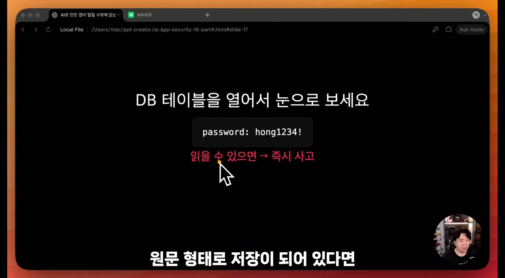
AI로 작업하다 보면 해시 과정을 직접 짜 주는 경우가 있어요. 영상은 그러지 말고 bcrypt 같은 검증된 방식을 쓰라고 해요. 아래 요청문은 bcrypt로 바꾸는 것과 함께, 로그인을 Supabase Auth로 옮기는 방법도 물어요. 인증을 직접 만들기보다 검증된 서비스를 쓰는 것도 방법이라는 뜻이에요.
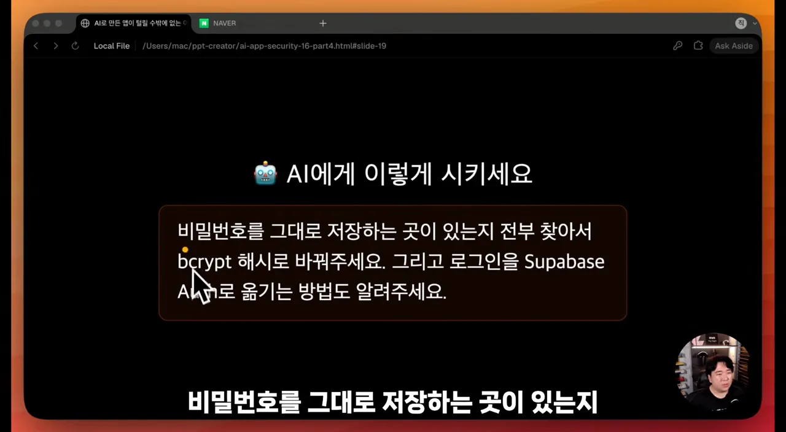
법이 정한 정보와 개인정보 처리방침
15번 · 법이 정한 정보는 따로 보호하기
슬라이드 제목은 "법이 정한 정보는 암호화하세요"예요. 아래 화면처럼 저장할 때 암호화 대상으로 네 가지를 꼽아요. 고유식별정보(주민등록번호·여권번호 같은 것), 비밀번호, 생체정보, 계좌번호·카드번호예요.
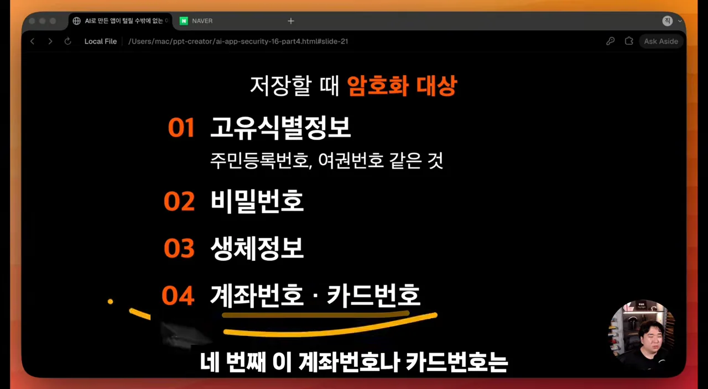
영상은 이게 권고가 아니라 법의 요구라고 강조해요. 다음 슬라이드에 근거가 '개인정보보호법의 안전성 확보조치 기준'이라고 적혀 있어요.
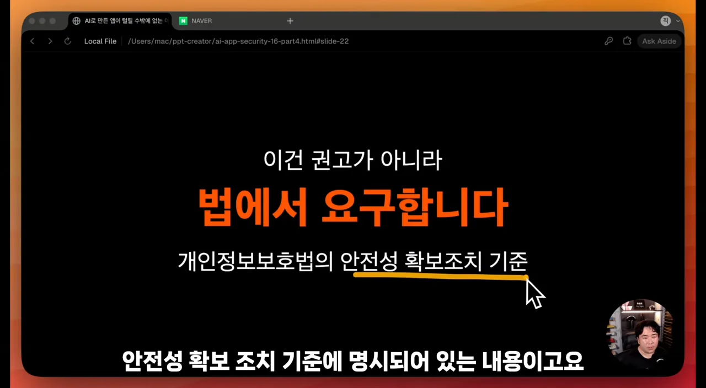
한 가지 짚을 점이 있어요. 슬라이드는 '암호화'라고 쓰지만, 말로는 "네 가지 모두 해시를 적용해야 한다"고 설명해요. 기준 원문은 둘을 나눠요. 아래 상자를 보세요.
영상이 "진짜 핵심"이라고 꼽는 건 따로 있어요. 서비스에서 쓰지 않을 정보는 아예 받지 않는 거예요. AI에게 수집하는 개인정보 항목을 전부 뽑게 하고, 없어도 되는 항목을 표시하게 한 뒤, 꼭 필요한 항목은 저장할 때 보호되는지 확인시키면 돼요.
16번 · 개인정보 처리방침 만들기
시작 전에 영상은 이게 법률 자문이 아니라고 밝혀요. 다루는 정보에 따라 규정이 달라지니, 취미가 아니라 사업으로 키울 거라면 전문가 확인을 꼭 받으라고 해요. 여기서는 최소한 알아야 할 것만 다뤄요.
개인정보 처리방침은 선택이 아니라 의무이고, 게시하는 것까지 의무예요. 이메일 주소 하나만 받아도 개인정보처리자가 되고, 처리방침을 보이는 곳에 올려야 해요. 아래 슬라이드가 들어갈 내용을 칩으로 늘어놨어요. 수집 항목, 이용 목적, 보유 기간, 제3자 제공, 처리위탁, 파기 절차, 이용자 권리, 보호책임자 연락처예요.
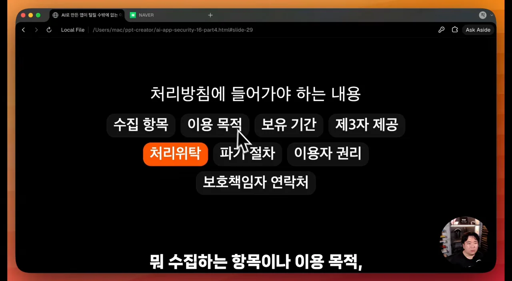
바이브 코딩에서 특히 놓치는 게 처리위탁이에요. 아래 슬라이드의 네 칩, AI API·클라우드 DB·이메일 발송·분석 도구가 모두 사용자 정보를 다른 회사에 맡기는 경우예요. 이런 도구를 쓴다면 처리방침의 위탁 항목에 적어야 해요.
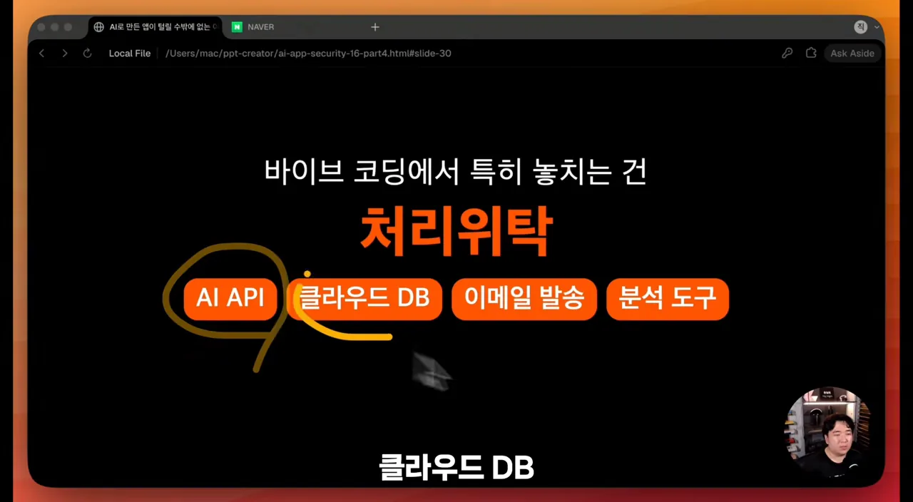
무엇을 쓰고 있는지 모르겠다면 AI에게 코드를 뒤져 달라고 하면 돼요. 아래 요청문은 코드가 부르는 외부 서비스를 전부 목록으로 뽑아 처리방침 위탁 항목에 적을 수 있게 정리해 달라는 내용이에요.
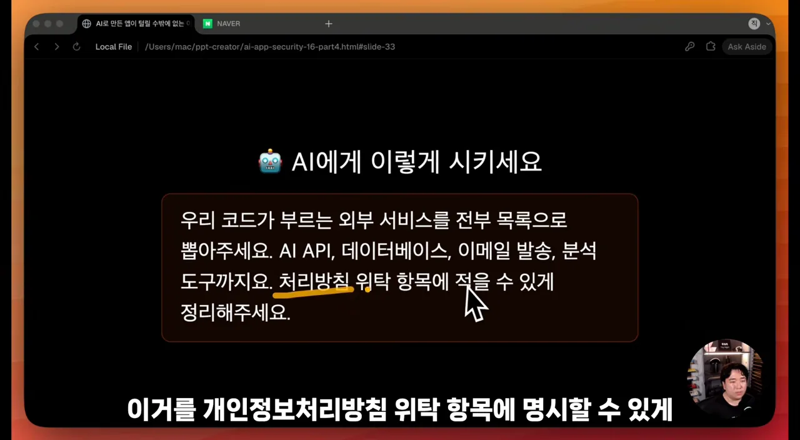
영상은 4부를 네 줄로 정리하고 마무리해요. 주소창 자물쇠, 비밀번호 해시, 법이 정한 정보 보호, 위탁 항목까지 들어간 처리방침이에요.
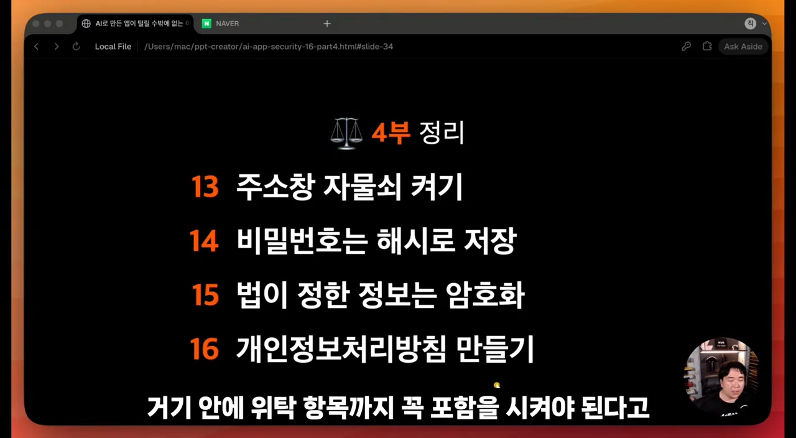
보너스: OWASP Top 10
마지막 보너스는 OWASP Top 10이에요. OWASP(Open Web Application Security Project)는 전 세계 비영리 보안 단체이고, 웹 애플리케이션 취약점 열 가지를 골라 발표해요. 영상은 구글에서 검색한 뒤 국내 보안 회사가 정리한 'OWASP Top 10 2025: 주요 변경사항' 글을 띄워 보여 줘요.
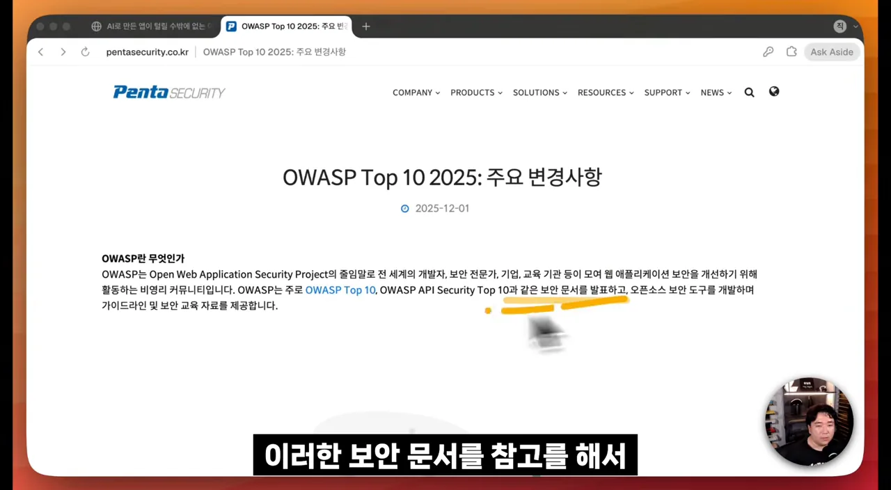
영상은 1부(API 키와 환경변수를 다룰 때 주의할 점)와 2부(데이터베이스 접근 권한)가 이전 영상에 있다고 안내하며 끝나요. 16개를 한 번에 보려면 두 편을 함께 보는 게 좋아요.